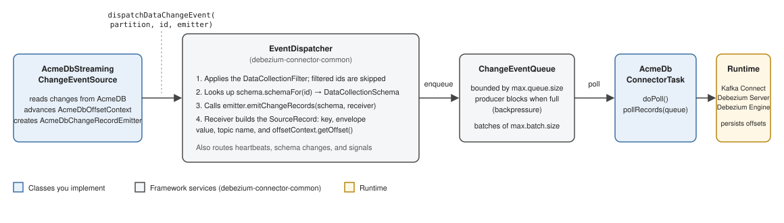

Developing Debezium Source Connectors
- Introduction
- Architecture overview
- Prerequisites and project setup
- Implementation walkthrough
- The connector class
- The connector configuration
- SourceInfo and SourceInfoStructMaker
- Partition and Partition.Provider
- OffsetContext and OffsetContext.Loader
- The database schema
- The database connection and value converters
- The snapshot change event source
- The streaming change event source
- The change record emitter
- The change event source factory
- The connector task
- Supporting services
- Configuration and deployment
- Testing
- Debugging and troubleshooting
- Reference
Introduction
This guide explains how to develop a new Debezium source connector. It walks you through every framework contract that a connector must implement, in the order in which you build them, and shows how the pieces fit together at runtime. It is written for Java developers who are familiar with Apache Kafka and Kafka Connect concepts and who want to capture changes from a data source that Debezium does not yet support.
Every Debezium source connector is a Kafka Connect source connector; building one requires additional implementation work on top of the Kafka Connect API. In exchange, the framework provides the same change data capture pipeline that all existing Debezium connectors run on: a managed snapshot-to-streaming lifecycle, structured offset management, schema representation, a standard change event envelope, queueing with backpressure, heartbeats, signals, notifications, and metrics.
Each connector reads from its data source in its own way, so there is no single global rule for where the framework ends and connector-specific logic begins.
Instead, the framework defines a set of contracts, and each connector decides how much of the provided base implementation it can reuse.
This guide maps those contracts to the concrete classes that you provide, using a fictional source named AcmeDB (AcmeDbConnector and its companion classes) for the code snippets and the connectors in the main Debezium repository as production references, in particular:
-
The SQL Server connector, a relational connector that polls change tables and relies on a database schema history.
-
The PostgreSQL connector, a relational connector that consumes a pushed logical replication stream and rebuilds schema from the live catalog.
The framework classes described in this guide live in the debezium-connector-common module.
This module was previously named debezium-core, and the Maven artifact io.debezium:debezium-core now relocates to io.debezium:debezium-connector-common; the Java package names (io.debezium.pipeline.*, io.debezium.relational.*, and so on) are unchanged.
A small number of stable SPIs, such as io.debezium.spi.snapshot.Snapshotter and io.debezium.spi.topic.TopicNamingStrategy, live in the debezium-api module.
What the framework adds to Kafka Connect
A plain Kafka Connect source connector implements org.apache.kafka.connect.source.SourceConnector and org.apache.kafka.connect.source.SourceTask, and the developer is responsible for everything else: data extraction, offset bookkeeping, schema construction, and message format.
All of that still applies to a Debezium connector; you still implement start(), a poll method, and stop(), but the framework structures the work and provides reusable implementations for the common parts.
| Aspect | Plain Kafka Connect source connector | Source connector built on the Debezium framework |
|---|---|---|
Base API |
|
|
Lifecycle |
You implement |
You still implement |
Offset management |
Hand-built maps attached to each |
Structured through |
Schema and records |
Hand-built |
|
Snapshot and streaming |
Your own ad-hoc logic |
Explicit |
Envelope format |
No envelope required |
Standard Debezium envelope for data change events ( |
Error handling |
Entirely manual |
Still implemented by the connector, with |
Both kinds of connector run on the same runtimes. A Debezium source connector can run across various runtimes, such as Kafka Connect, Debezium Server, or Debezium Engine. The practical benefit of implementing the Debezium contracts is that your events carry the standard envelope, which makes them work with Debezium’s converters, single message transformations, and sink ecosystem.
Architecture overview
Component overview
The diagram below shows every class you will create, together with the framework contract that each one fulfills. Later sections of this guide build these classes one by one, so you may want to refer back to this tree as you read.
AcmeDbConnector (BaseSourceConnector)
└── AcmeDbConnectorTask (BaseSourceTask<AcmeDbPartition, AcmeDbOffsetContext>)
├── AcmeDbConnectorConfig (CommonConnectorConfig)
├── AcmeDbPartition / AcmeDbPartition.Provider (Partition / Partition.Provider)
├── AcmeDbOffsetContext / .Loader (CommonOffsetContext / OffsetContext.Loader)
├── AcmeDbSourceInfo / AcmeDbSourceInfoStructMaker (BaseSourceInfo / SourceInfoStructMaker)
├── AcmeDbDatabaseSchema (DatabaseSchema, e.g. via RelationalDatabaseSchema)
├── AcmeDbConnection (JdbcConnection, relational connectors)
├── AcmeDbValueConverters (JdbcValueConverters, relational connectors)
├── AcmeDbChangeEventSourceFactory (ChangeEventSourceFactory)
│ ├── AcmeDbSnapshotChangeEventSource (SnapshotChangeEventSource)
│ └── AcmeDbStreamingChangeEventSource (StreamingChangeEventSource)
├── AcmeDbChangeRecordEmitter (ChangeRecordEmitter)
├── AcmeDbErrorHandler (ErrorHandler)
└── Framework services instantiated in the task:
ChangeEventQueue, EventDispatcher, ChangeEventSourceCoordinator,
SignalProcessor, NotificationService, SnapshotterService
The classes on the left are yours.
The services at the bottom come from debezium-connector-common and are only instantiated and wired together in your task class.
Runtime flow
At runtime, every Debezium connector follows the same five-step flow:
-
Kafka Connect (or Debezium Server) instantiates the connector class, validates the configuration, and creates the task configurations.
-
The task starts, loads previously persisted offsets through the
OffsetContext.Loader, and builds the pipeline: schema, queue, dispatcher, and coordinator. -
The
ChangeEventSourceCoordinatorasks theSnapshotterwhether a snapshot is needed and, if so, runs theSnapshotChangeEventSource, which emitsREAD(r) events for existing data. -
When the snapshot completes, the coordinator starts the
StreamingChangeEventSourceat the database position where the snapshot was taken, and streaming emitsCREATE(c),UPDATE(u), andDELETE(d) events from that point on. -
Emitted events flow through the
ChangeEventQueueinto the runtime’s polling loop. Periodically, the runtime persists the offsets returned by yourOffsetContext.getOffset().
The flow is identical for every connector; only the snapshot and streaming implementations are source-specific.
The change event envelope
Debezium emits change events with a consistent envelope, regardless of the source type.
The envelope is defined by io.debezium.data.Envelope and contains the following fields:
-
before— the previous row state, if the source provides it. -
after— the new row state, if available. -
op— the operation code:r(read, during snapshot),c(create),u(update),d(delete), and for some connectorst(truncate) andm(message). -
source— metadata about the origin of the change, built by yourSourceInfoStructMaker. -
ts_ms(plusts_usandts_ns) — the event processing timestamp.
Example payload structure:
{
"op": "u",
"before": { "id": 1, "name": "Alice" },
"after": { "id": 1, "name": "Alice2" },
"source": { "db": "inventory", "table": "customers", "lsn": 12345, "snapshot": "false" },
"ts_ms": 1713801600000
}You never assemble this structure by hand.
The Envelope class provides read(…), create(…), update(…), and delete(…) factory methods, and for relational connectors the RelationalChangeRecordEmitter base class calls them for you.
This envelope applies to data change events.
Other message types that a connector emits, such as heartbeat records, schema change events, and transaction metadata events, each have their own envelope structure.
The framework defines those schemas (see io.debezium.schema.SchemaFactory), so you do not design them per connector.
Topic naming
Topic names are produced by a TopicNamingStrategy (an SPI in debezium-api).
The default for relational connectors, SchemaTopicNamingStrategy, produces <topic.prefix>.<schema>.<table>; heartbeat, transaction metadata, and schema change topics are also derived from topic.prefix.
You rarely implement this SPI yourself; you obtain the configured strategy from the connector configuration and pass it to the schema and dispatcher.
Capture patterns in existing connectors
Before designing a new connector, it helps to know the main capture patterns that existing Debezium connectors use, because your data source will usually resemble one of them.
Relational connectors split into two groups by how they obtain changes:
-
Push-based log subscription. The MySQL and MariaDB connectors connect to the server as if they were a replica:
BinlogStreamingChangeEventSourceregisters listeners on a binlog client, and the server pushes binary log events to it. The PostgreSQL connector attaches to a logical replication slot throughPostgresStreamingChangeEventSource, and the server pushes WAL contents decoded by thepgoutputplugin. -
Pull-based polling or mining. The SQL Server connector polls per-table CDC change tables in LSN windows:
SqlServerStreamingChangeEventSourceimplementsexecuteIteration(…), which the coordinator invokes repeatedly, and merges rows across change tables in commit order. The Oracle connector’s LogMiner adapter runs an iterative mining loop over redo logs, queryingV$LOGMNR_CONTENTSfor each SCN window.
Non-relational sources follow the same framework.
The MongoDB connector consumes MongoDB change streams in MongoDbStreamingChangeEventSource, keyed by CollectionId instead of TableId, and models schemaless documents with its own MongoDbSchema implements DatabaseSchema<CollectionId> instead of the relational schema classes.
Everything above the schema (BaseSourceTask, ChangeEventSourceCoordinator, ChangeEventQueue, EventDispatcher, signals, and notifications) is reused unchanged.
A second design decision cuts across both groups: whether the connector needs a database schema history.
-
If the change log references table structure as it was at write time, and the source cannot reproduce old structure on demand, the connector must record DDL in a schema history topic and replay it on restart. MySQL, Oracle, and SQL Server work this way; their config and schema classes extend
HistorizedRelationalDatabaseConnectorConfigandHistorizedRelationalDatabaseSchema. -
If the current catalog is always a valid description of incoming events, no history is needed. PostgreSQL works this way;
PostgresConnectorConfigextends plainRelationalDatabaseConnectorConfig, andPostgresSchemarefreshes table definitions from JDBC metadata whenever it detects drift.
Decide early which camp your source is in, because it determines which base classes you extend.
Prerequisites and project setup
Prerequisites
A source connector is runtime-independent: the same artifact runs on Kafka Connect and on Debezium Server. Debezium connectors target Java 17 for portability across runtimes.
| Component | Version | Purpose |
|---|---|---|
Java |
17 or later |
Build and runtime target for connectors |
Apache Maven |
3.9.8 |
Build tool |
Apache Kafka / Kafka Connect |
4.3.1 |
Provides the |
Debezium |
3.7.0.Final |
Framework classes ( |
You also need Docker (or a local Kafka installation) to run the connector during verification, and access to the data source you want to capture.
Maven module
Create a standard Maven module and declare the framework dependency. The Kafka Connect API and logging are provided by the runtime and must not be bundled:
<dependencies>
<dependency>
<groupId>io.debezium</groupId>
<artifactId>debezium-connector-common</artifactId>
</dependency>
<dependency>
<groupId>org.apache.kafka</groupId>
<artifactId>connect-api</artifactId>
<scope>provided</scope>
</dependency>
<dependency>
<groupId>org.slf4j</groupId>
<artifactId>slf4j-api</artifactId>
<scope>provided</scope>
</dependency>
</dependencies>Import io.debezium:debezium-bom in dependencyManagement to keep versions aligned.
In Debezium versions before the module rename, the framework artifact is io.debezium:debezium-core.
Depending on debezium-core still works, because the artifact relocates to debezium-connector-common, but new connectors should depend on debezium-connector-common directly.
|
Package the connector with the Maven Shade or Assembly plugin so that connector-specific dependencies are included in the plugin directory, while provided runtime dependencies are not.
Package structure and conventions
Follow the io.debezium.connector.<name> package convention used by all Debezium connectors, with one class per framework contract as shown in the component overview.
Two resource conventions matter:
-
META-INF/services/org.apache.kafka.connect.source.SourceConnectormust list your connector class so that the Kafka Connect plugin scanner discovers it. -
Add a
Moduleclass and a Maven-filteredbuild.versionproperties file, so thatversion()reports the project version; seeio.debezium.connector.sqlserver.Modulefor the pattern.
Implementation walkthrough
This section builds each contract in dependency order. Every subsection states the contract, shows a short AcmeDB snippet, and points at the SQL Server and PostgreSQL implementations for the production-grade details.
|
Debezium connectors prefix the classes that implement a framework contract with the name of the source, for example |
The connector class
The connector class is the entry point that you reference in connector.class.
It extends io.debezium.connector.common.BaseSourceConnector, which adds a single validation hook on top of Kafka Connect’s SourceConnector:
public class AcmeDbConnector extends BaseSourceConnector {
@Override
public Class<? extends Task> taskClass() {
return AcmeDbConnectorTask.class;
}
@Override
public List<Map<String, String>> taskConfigs(int maxTasks) {
// Split the configuration across tasks; most sources support exactly one task.
return List.of(Map.copyOf(properties));
}
@Override
protected Map<String, ConfigValue> validateAllFields(Configuration config) {
return config.validate(AcmeDbConnectorConfig.ALL_FIELDS);
}
}The connector class runs on the Kafka Connect worker, not inside the task, so keep it thin: declare the task class, split the configuration across tasks, and validate the configuration.
Relational connectors extend RelationalBaseSourceConnector instead, which implements validate(…) for you and adds a validateConnection(…) hook.
PostgresConnector, for example, opens a real connection with a timeout during validation and attaches any failure to the database.hostname config value, so that the error appears on the right field in the Kafka Connect UI.
The connector configuration
Your configuration class defines the connector’s Field constants and gives the framework typed access to common settings.
Which base class you extend is the first consequence of the design decision from the architecture overview:
-
CommonConnectorConfig— sources that are not relational (MongoDB). -
RelationalDatabaseConnectorConfig— relational sources without schema history (PostgreSQL). -
HistorizedRelationalDatabaseConnectorConfig— relational sources with schema history (SQL Server, MySQL, Oracle).
public class AcmeDbConnectorConfig extends RelationalDatabaseConnectorConfig {
public static final Field ACMEDB_PROPERTY = Field.create("acmedb.property")
.withType(ConfigDef.Type.STRING)
.withImportance(ConfigDef.Importance.HIGH)
.withDescription("Description shown in the Connect UI and generated docs.")
.required();
@Override
protected SourceInfoStructMaker<?> getSourceInfoStructMaker(Version version) {
return new AcmeDbSourceInfoStructMaker();
}
}CommonConnectorConfig already defines the connector-agnostic options that every Debezium connector inherits: topic.prefix, max.queue.size, max.batch.size, poll.interval.ms, tombstones.on.delete, signal and notification channels, and more.
The relational base adds database.hostname-style connection fields and the table/column include and exclude list machinery; the historized base adds the schema.history.internal.* configuration and a HistoryRecordComparator.
Group the connector’s fields with a ConfigDefinition.
Each config base class exposes a CONFIG_DEFINITION that you extend, and the groups (Field.Group.CONNECTION, CONNECTOR, CONNECTOR_SNAPSHOT, and so on) drive the ordering in the Kafka Connect ConfigDef and the generated connector documentation:
private static final ConfigDefinition CONFIG_DEFINITION = RelationalDatabaseConnectorConfig.CONFIG_DEFINITION.edit()
.name("AcmeDB")
.group(Field.Group.CONNECTION, HOSTNAME, PORT, USER, PASSWORD)
.group(Field.Group.CONNECTOR, ACMEDB_PROPERTY, SOURCE_INFO_STRUCT_MAKER)
.group(Field.Group.CONNECTOR_SNAPSHOT, SNAPSHOT_MODE)
.create();
public static final Field.Set ALL_FIELDS = Field.setOf(CONFIG_DEFINITION.all());
public static ConfigDef configDef() {
return CONFIG_DEFINITION.configDef();
}ALL_FIELDS backs validateAllFields(…) in the connector class and getAllConfigurationFields() in the task, and configDef() backs the connector’s config() method.
See SqlServerConnectorConfig for a complete definition, including excluding(…) to drop inherited fields that do not apply.
SourceInfo and SourceInfoStructMaker
Every change event carries a source struct that identifies where the event came from.
You model the mutable state in a SourceInfo class extending io.debezium.connector.common.BaseSourceInfo, and you describe its schema in a SourceInfoStructMaker, usually by extending AbstractSourceInfoStructMaker, which contributes the common fields (version, connector, name, ts_ms, snapshot, db, and so on):
public class AcmeDbSourceInfoStructMaker extends AbstractSourceInfoStructMaker<AcmeDbSourceInfo> {
private Schema schema;
@Override
public void init(String connector, String version, CommonConnectorConfig config) {
super.init(connector, version, config);
schema = commonSchemaBuilder()
.name("io.debezium.connector.acmedb.Source")
.field("position", Schema.INT64_SCHEMA) // your position fields
.build();
}
@Override
public Schema schema() {
return schema;
}
@Override
public Struct struct(AcmeDbSourceInfo sourceInfo) {
return commonStruct(sourceInfo).put("position", sourceInfo.getPosition());
}
}|
For comparison, SQL Server’s |
Partition and Partition.Provider
A Partition identifies one independently-captured slice of the source and provides the map that Kafka Connect uses as the source partition key for offset storage.
Most connectors have exactly one partition per task, keyed by the logical server name:
public class AcmeDbPartition implements Partition {
@Override
public Map<String, String> getSourcePartition() {
return Map.of("server", serverName);
}
// Implement equals() and hashCode(): partitions are used as
// map keys by the coordinator and the metrics.
}The nested Partition.Provider returns the set of partitions the task must process, typically a singleton set.
|
SQL Server is the instructive production example: its |
OffsetContext and OffsetContext.Loader
The OffsetContext encapsulates the connector-specific position that must survive restarts, and getOffset() serializes it to the map that Kafka Connect persists.
Extend io.debezium.pipeline.CommonOffsetContext, which already implements the snapshot state machine (snapshot and snapshot_completed keys) for you.
public class AcmeDbOffsetContext extends CommonOffsetContext<AcmeDbSourceInfo> {
@Override
public Map<String, ?> getOffset() {
return Map.of("position", position.toString());
}
@Override
public void event(DataCollectionId collectionId, Instant timestamp) {
// Called by the dispatcher for every event; stamp the source info
// so the position appears in the outgoing source block.
sourceInfo.update(position, timestamp, collectionId);
}
}The Loader is the inverse: it rehydrates the context from the persisted map on startup.
public static class Loader implements OffsetContext.Loader<AcmeDbOffsetContext> {
@Override
public AcmeDbOffsetContext load(Map<String, ?> offset) {
return new AcmeDbOffsetContext(config,
Position.valueOf((String) offset.get("position")),
loadSnapshot(offset).orElse(null), loadSnapshotCompleted(offset));
}
}Two rules to respect:
-
getOffset()must only contain types that Kafka Connect can serialize (strings, numbers, booleans). Production connectors stringify structured positions; SQL Server, for example, storescommit_lsnandchange_lsnas strings and adds anevent_serial_nocounter to disambiguate events that share an LSN. -
On first start there is no stored offset, and the framework hands your
Loadernothing. Your task must seed a default context in that case (shown in the task section below), so that the snapshot logic sees a valid, "empty" position rather thannull.
The database schema
The DatabaseSchema maps each captured collection to a DataCollectionSchema, which bundles the key schema and the Envelope for the value.
Collections are identified by a DataCollectionId; relational connectors use the provided TableId.
For relational sources you extend one of the provided base classes and inherit the schema construction machinery:
-
RelationalDatabaseSchemabuildsTableSchemaobjects (key schema, value schema, envelope) fromTablemetadata throughTableSchemaBuilder, honoring the column filters, custom converters, and the topic naming strategy. -
HistorizedRelationalDatabaseSchemaadds schema history recording andrecover(…), which replays DDL from the history topic on restart; you implementgetDdlParser()andapplySchemaChange(…).
Non-relational sources implement DatabaseSchema<I> directly, as the MongoDB connector does with MongoDbSchema, and build their DataCollectionSchema objects from whatever structure the source provides.
If your source can change schemas while streaming, decide here how the connector notices: SQL Server detects a second capture instance for a table and switches at the right LSN; PostgreSQL compares each incoming message’s columns with the cached table and refreshes from JDBC metadata on drift.
The database connection and value converters
Relational connectors route all database access through an AcmeDbConnection class extending io.debezium.jdbc.JdbcConnection.
JdbcConnection provides connection handling, query helpers, and metadata reading; your subclass centralizes every connector-specific SQL statement (resolving the current log position, listing captured tables, fetching change data) so that the event sources stay free of raw SQL.
SqlServerConnection and PostgresConnection show the pattern.
Value conversion is the second relational-specific concern.
An AcmeDbValueConverters class extending io.debezium.jdbc.JdbcValueConverters maps source column types to Kafka Connect schema types and implements the decimal.handling.mode and time.precision.mode semantics; you override only the types that the JDBC defaults do not cover:
public class AcmeDbValueConverters extends JdbcValueConverters {
@Override
public SchemaBuilder schemaBuilder(Column column) {
// Return a SchemaBuilder for source-specific column types;
// fall back to super.schemaBuilder(column) for everything else.
}
@Override
public ValueConverter converter(Column column, Field fieldDefn) {
// Return a ValueConverter that turns raw column values into the
// schema's Java type; fall back to super.converter(column, fieldDefn).
}
}Its sibling DefaultValueConverter converts column default value metadata: it parses the default value literal read from the catalog (for example getdate() or '0') into the Java type that matches the column’s schema, so that generated schemas carry correct default values.
See SqlServerValueConverters together with SqlServerDefaultValueConverter for a complete pair.
Non-relational connectors convert values wherever they build their structs and do not need these classes.
The snapshot change event source
The SnapshotChangeEventSource reads the current state of the source and emits one READ (r) event per existing record.
Its two responsibilities are deciding whether a snapshot is needed and executing it:
@Override
public SnapshottingTask getSnapshottingTask(AcmeDbPartition partition, AcmeDbOffsetContext offsetContext) {
boolean snapshotData = snapshotterService.getSnapshotter()
.shouldSnapshotData(offsetContext != null, offsetContext != null && offsetContext.isInitialSnapshotRunning());
return new SnapshottingTask(false, snapshotData, List.of(), Map.of(), false);
}
@Override
public SnapshotResult<AcmeDbOffsetContext> execute(ChangeEventSourceContext context, AcmeDbPartition partition,
AcmeDbOffsetContext offsetContext, SnapshottingTask task) {
if (task.shouldSkipSnapshot()) {
return SnapshotResult.skipped(offsetContext);
}
for (SourceRow row : readCurrentState()) {
offsetContext.advanceTo(row.position());
dispatcher.dispatchSnapshotEvent(partition, collectionId(row),
new AcmeDbChangeRecordEmitter(partition, offsetContext, Operation.READ, row),
snapshotReceiver);
}
return SnapshotResult.completed(offsetContext); // streaming starts at this offset
}The contract is small: emit READ events, keep the offset context up to date, and return SnapshotResult.completed(offsetContext) so the coordinator can start streaming at exactly that position.
Relational connectors should not implement this interface directly.
RelationalSnapshotChangeEventSource already implements the entire snapshot algorithm (determining captured tables from the include/exclude filters, locking, reading table structure, persisting schema history, and reading data in chunks) and leaves you a handful of template methods:
protected abstract Set<TableId> getAllTableIds(RelationalSnapshotContext<P, O> ctx);
protected abstract void lockTablesForSchemaSnapshot(ChangeEventSourceContext ctx, RelationalSnapshotContext<P, O> snapshotCtx);
protected abstract void determineSnapshotOffset(RelationalSnapshotContext<P, O> ctx, O previousOffset);
protected abstract void readTableStructure(ChangeEventSourceContext ctx, RelationalSnapshotContext<P, O> snapshotCtx, O offset, SnapshottingTask task);
protected abstract void releaseSchemaSnapshotLocks(RelationalSnapshotContext<P, O> ctx);
protected abstract SchemaChangeEvent getCreateTableEvent(RelationalSnapshotContext<P, O> ctx, Table table);
protected abstract Optional<String> getSnapshotSelect(RelationalSnapshotContext<P, O> ctx, TableId tableId, List<String> columns);
protected abstract O copyOffset(RelationalSnapshotContext<P, O> snapshotContext);|
See |
Snapshot modes and the Snapshotter SPI.
Whether a snapshot runs is decided by the Snapshotter (SPI in debezium-api), selected by the snapshot.mode property.
The framework ships the standard modes (always, initial, initial_only, no_data, recovery, when_needed, configuration_based, and when_needed_no_data) as Snapshotter implementations discovered via ServiceLoader, together with SnapshotLock and SnapshotQuery SPIs that connectors can specialize; see the META-INF/services files in the SQL Server connector for the registration pattern.
Setting snapshot.mode to custom selects a user-provided Snapshotter, registered the same way and named by snapshot.mode.custom.name.
The streaming change event source
The StreamingChangeEventSource carries most of the connector-specific logic: it obtains changes from the source, updates the offset context, and dispatches one emitter per change.
Its execute(…) method must loop until context.isRunning() turns false:
@Override
public void execute(ChangeEventSourceContext context, AcmeDbPartition partition, AcmeDbOffsetContext offsetContext)
throws InterruptedException {
while (context.isRunning()) {
for (SourceChange change : pollChanges(offsetContext.position())) { // your source access
offsetContext.advanceTo(change.position());
dispatcher.dispatchDataChangeEvent(partition, change.collectionId(),
new AcmeDbChangeRecordEmitter(partition, offsetContext, change));
}
pauseUntilNewChanges(); // poll interval, watch API, blocking read, ...
}
}Dispatching goes through the framework’s EventDispatcher, never directly to the queue.
The dispatcher applies the collection filter, looks up the schema, runs your emitter, and enqueues the resulting SourceRecord into the ChangeEventQueue, which applies backpressure when Kafka or the sink is slow.
The following diagram shows the path of a single change from your streaming source to the runtime:

|
For production examples of the two streaming styles, read these two classes side by side:
Ordering matters in both styles: preserve the source’s commit order, and if the source provides transaction boundaries, dispatch them through the |
The change record emitter
The ChangeRecordEmitter converts one source-level change into the final key and envelope structs.
How much you write here depends entirely on which base class you can use.
Relational connectors: extend RelationalChangeRecordEmitter.
The base class already implements emitChangeRecords(…): it builds the key and value structs from column arrays via the TableSchema, constructs the envelope (create/read/update/delete), handles primary-key changes (emitted as a delete plus a create with correlation headers), and supports skipping unchanged events.
A subclass typically provides only the operation mapping and the row images.
SqlServerChangeRecordEmitter is the most trivial example in the main repository; apart from the mirror-image getOldColumnValues(), this is essentially the whole class:
public class SqlServerChangeRecordEmitter extends RelationalChangeRecordEmitter {
@Override
public Operation getOperation() {
// Maps SQL Server's __$operation codes (1=delete, 2=insert,
// 3=update-before, 4=update-after) to Envelope operations.
...
}
@Override
protected Object[] getNewColumnValues() {
switch (getOperation()) {
case CREATE:
case READ:
return data;
case UPDATE:
return dataNext;
default:
return null;
}
}
}Emitters grow only when the change feed is raw.
PostgresChangeRecordEmitter maps the decoder’s operation enum to Envelope.Operation in the same way, but additionally positions decoder columns against the cached table schema, recovers unchanged TOASTed column values, honors REPLICA IDENTITY (the before-image only exists to the extent the WAL contains it), and triggers a schema refresh when the incoming message no longer matches the cached table.
As a rule of thumb, emitter complexity tracks how raw the change feed is, not how complex the database is.
Non-relational connectors: implement ChangeRecordEmitter (or extend AbstractChangeRecordEmitter).
Without table semantics you call the Envelope factory methods yourself:
@Override
public void emitChangeRecords(DataCollectionSchema schema, Receiver<AcmeDbPartition> receiver)
throws InterruptedException {
Envelope envelope = schema.getEnvelopeSchema();
Struct source = offsetContext.getSourceInfo();
Struct value = switch (operation) {
case READ -> envelope.read(after, source, clock.currentTimeAsInstant());
case CREATE -> envelope.create(after, source, clock.currentTimeAsInstant());
case UPDATE -> envelope.update(before, after, source, clock.currentTimeAsInstant());
case DELETE -> envelope.delete(before, source, clock.currentTimeAsInstant());
default -> throw new IllegalStateException("Unexpected operation: " + operation);
};
receiver.changeRecord(partition, schema, operation, key, value, offsetContext, null);
}
The value passed to receiver.changeRecord(…) must be the complete envelope struct, not the raw row struct.
Passing the row struct compiles fine but fails at serialization time with DataException: Mismatching schema.
|
If your source does not provide before-images, leave before as null; consumers must be prepared for that.
The change event source factory
The factory is plain glue code: the coordinator asks it for the snapshot and streaming sources.
public class AcmeDbChangeEventSourceFactory implements ChangeEventSourceFactory<AcmeDbPartition, AcmeDbOffsetContext> {
@Override
public SnapshotChangeEventSource<AcmeDbPartition, AcmeDbOffsetContext> getSnapshotChangeEventSource(
SnapshotProgressListener<AcmeDbPartition> progressListener,
NotificationService<AcmeDbPartition, AcmeDbOffsetContext> notificationService) {
return new AcmeDbSnapshotChangeEventSource(config, schema, dispatcher, progressListener);
}
@Override
public StreamingChangeEventSource<AcmeDbPartition, AcmeDbOffsetContext> getStreamingChangeEventSource() {
return new AcmeDbStreamingChangeEventSource(config, schema, dispatcher);
}
}Connectors that support incremental snapshots also override getIncrementalSnapshotChangeEventSource(…); see PostgresChangeEventSourceFactory for a complete example.
The connector task
The task class brings everything together.
It extends BaseSourceTask<P, O>, whose Kafka Connect lifecycle methods (start, poll, stop) are final template methods; you implement the abstract hooks:
-
preStart(Configuration)— create the typed configuration and return the task context (this hook is public; the rest are protected). -
start(Configuration)— build the pipeline and return the started coordinator. -
doPoll()— almost always one line: drain the queue. -
doStop()— close connections and other resources. -
connectorName(),getAllConfigurationFields(),getErrorHandler()(returnsOptional<ErrorHandler>), andversion().
start(Configuration) follows the same wiring sequence in every connector:
@Override
protected ChangeEventSourceCoordinator<AcmeDbPartition, AcmeDbOffsetContext> start(Configuration configuration) {
// 1. Load previous offsets; seed a default context on first start.
Offsets<AcmeDbPartition, AcmeDbOffsetContext> previousOffsets = getPreviousOffsets(
new AcmeDbPartition.Provider(connectorConfig), new AcmeDbOffsetContext.Loader(connectorConfig));
if (previousOffsets.getTheOnlyOffset() == null) {
previousOffsets = Offsets.of(new AcmeDbPartition(serverName), AcmeDbOffsetContext.initial(connectorConfig));
}
// 2. Queue, error handler, dispatcher.
queue = new ChangeEventQueue.Builder<DataChangeEvent>()
.pollInterval(connectorConfig.getPollInterval())
.maxBatchSize(connectorConfig.getMaxBatchSize())
.maxQueueSize(connectorConfig.getMaxQueueSize())
.build();
errorHandler = new AcmeDbErrorHandler(connectorConfig, queue, errorHandler);
EventDispatcher<AcmeDbPartition, TableId> dispatcher = new EventDispatcher<>(
connectorConfig, topicNamingStrategy, schema, queue, dataCollectionFilter,
DataChangeEvent::new, metadataProvider, connectorConfig.schemaNameAdjuster(),
signalProcessor, headerProducer);
// 3. Coordinator: orchestrates the snapshot -> streaming handover.
ChangeEventSourceCoordinator<AcmeDbPartition, AcmeDbOffsetContext> coordinator =
new ChangeEventSourceCoordinator<>(previousOffsets, errorHandler, AcmeDbConnector.class,
connectorConfig, new AcmeDbChangeEventSourceFactory(...), metricsFactory,
dispatcher, schema, signalProcessor, notificationService, snapshotterService);
coordinator.start(taskContext, queue, metadataProvider);
return coordinator;
}
@Override
protected List<SourceRecord> doPoll() throws InterruptedException {
return pollRecords(queue);
}SqlServerConnectorTask.start(…) is the recommended full reference: it adds JDBC connection factories, schema.initializeStorage() and validateSchemaHistory(…) for the schema history, the bean registry, and a ServiceLoader-resolved SnapshotterService.
BaseSourceTask also provides configuration validation before start(Configuration) is called, restart backoff when your code throws Kafka Connect’s RetriableException, offset commit propagation to StreamingChangeEventSource.commitOffset(…), and getPreviousOffsets(…) for reading persisted offsets.
Supporting services
A few small classes round out the connector: an ErrorHandler that classifies retriable failures, an EventMetadataProvider that feeds metrics and heartbeats, a metrics factory, value converters, the Module class, and the META-INF/services registration files.
Each of them is summarized, with examples from the main repository, in the supporting services table in the Reference section at the end of this guide.
Heartbeats, signals (including ad-hoc incremental snapshots), and notifications are provided by the framework and enabled through configuration; you get them by wiring the SignalProcessor and NotificationService into the dispatcher and coordinator as shown above.
Configuration and deployment
Common configuration properties
Every connector inherits these properties from CommonConnectorConfig:
| Property | Type | Default | Description |
|---|---|---|---|
|
STRING |
(required) |
Logical name of the source; prefix for all topics produced by this connector. |
|
STRING |
connector-specific (usually |
Which |
|
BOOLEAN |
|
Whether to emit a tombstone record after each delete event, for log compaction. |
|
INT |
|
Maximum number of records returned per poll batch. |
|
INT |
|
Maximum number of records held in the change event queue; the producer thread blocks when the queue is full. |
|
LONG |
|
Optional byte-based bound for the queue. |
|
LONG |
|
How long the queue poll waits for records before returning an empty batch. |
|
INT |
|
Interval for emitting heartbeat records to the |
Connector-specific properties are the Field constants defined in your configuration class.
Deploying to Kafka Connect
-
Build the connector archive with
mvn clean package. -
Place the connector JAR (with its bundled dependencies) in a directory on the Kafka Connect
plugin.path. -
Start Kafka and Kafka Connect, for example with the Debezium container image:
services: kafka: image: apache/kafka:latest connect: image: quay.io/debezium/connect:3.7 ports: - "8083:8083" environment: - BOOTSTRAP_SERVERS=kafka:9092 - GROUP_ID=1 - CONFIG_STORAGE_TOPIC=my_connect_configs - OFFSET_STORAGE_TOPIC=my_connect_offsets - STATUS_STORAGE_TOPIC=my_connect_status volumes: - ./target/acmedb-connector:/kafka/connect/acmedb-connector -
Register the connector through the REST API:
{ "name": "acmedb-connector", "config": { "connector.class": "io.debezium.connector.acmedb.AcmeDbConnector", "tasks.max": "1", "topic.prefix": "acmedb", "acmedb.property": "value" } }curl -i -X POST -H "Accept:application/json" -H "Content-Type:application/json" \ http://localhost:8083/connectors/ -d @register-acmedb-connector.json
Deploying to Debezium Server
Debezium Server runs the same connector without a Kafka cluster and can forward events to sinks such as Kafka, Pulsar, Kinesis, NATS, Redis, or HTTP.
-
Add the connector JAR to the Debezium Server
libdirectory. -
Configure the source and a sink in
config/application.properties. Connector options keep their names, prefixed withdebezium.source.. The example below uses the HTTP sink to post each event to webhook.site, which gives you a unique URL and shows every request it receives in the browser, so you can inspect events without running any other infrastructure. Open webhook.site, copy the URL it generates for you, and use it as the sink URL:debezium.source.connector.class=io.debezium.connector.acmedb.AcmeDbConnector debezium.source.topic.prefix=acmedb debezium.source.acmedb.property=value debezium.source.offset.storage.file.filename=data/offsets.dat debezium.source.offset.flush.interval.ms=1000 debezium.sink.type=http debezium.sink.http.url=https://webhook.site/<your-unique-id> -
Start the server with
./run.sh.
Offsets are stored in the configured file (or another offset store) instead of a Kafka topic, which makes Debezium Server convenient for quick development iterations: delete the offset file to force a fresh snapshot.
Verifying the connector
Verification exercises the four behaviors that every source connector must get right: snapshotting, streaming, offset persistence, and (if supported) schema evolution.
The steps below use Debezium Server with the HTTP sink configured above, so each event appears as a request on your webhook.site page, but the same checks apply on Kafka Connect with kafka-console-consumer or a Kafka UI.
-
Verify the snapshot. Start the runtime with existing data in the source. You should see one
READ("op": "r") event per existing record, withsource.snapshotindicating the snapshot phase. -
Verify streaming. Change the source while the connector runs, for example with INSERT/UPDATE/DELETE statements or the source’s equivalent. The connector should emit
c,u, anddevents with correctbefore/afterimages. -
Verify offset persistence. Stop the runtime, change the source again, and restart it. The connector must resume from the last committed position: no snapshot, no re-emission of already-processed events, and the changes made while it was down are captured. This confirms that
OffsetContext.getOffset()and theLoaderround-trip correctly. -
Verify schema evolution. If the connector supports schema changes, alter the source schema and verify that subsequent records use the new schema.
Testing
Automated tests matter as much as the implementation, and the framework ships a reusable test harness so that a new connector inherits the same scenario coverage as the established ones.
Test dependencies
The test utilities live in the test-jars of debezium-embedded (the harness and scenario bases), debezium-connector-common (assertions and JUnit extensions), and debezium-util (the Testing helpers).
Declare each with <type>test-jar</type> and <scope>test</scope>, plus the plain debezium-embedded jar at test scope to run the engine, following the pattern in debezium-connector-sqlserver/pom.xml.
Integration tests with AbstractConnectorTest
io.debezium.embedded.AbstractConnectorTest runs your connector inside an embedded Debezium Engine with file-based offset storage, captures every emitted SourceRecord, and validates each record’s envelope structure.
Extend its async binding, AbstractAsyncEngineConnectorTest, and write tests in the start-act-consume-assert style:
@Test
public void shouldSnapshotAndStream() throws Exception {
start(AcmeDbConnector.class, config());
assertConnectorIsRunning();
SourceRecords snapshot = consumeRecordsByTopic(EXISTING_ROWS);
VerifyRecord.isValidRead(snapshot.recordsForTopic("acmedb.inventory.customers").get(0), "id", 1);
insertSourceRow(); // act on the source
SourceRecords streamed = consumeRecordsByTopic(1);
VerifyRecord.isValidInsert(streamed.recordsForTopic("acmedb.inventory.customers").get(0), "id", 2);
stopConnector();
}The pieces you will use constantly:
-
start(connectorClass, config)/stopConnector()— engine lifecycle per test. -
consumeRecordsByTopic(n)returning aSourceRecordscollector withrecordsForTopic(…),topics(), andallRecordsInOrder(). -
assertConnectorIsRunning(),assertNoRecordsToConsume(),assertInsert/assertUpdate/assertDelete/assertTombstone(…),assertOffset(…). -
VerifyRecord.isValid…(…)for structural envelope validation, andSourceRecordAssert.assertThat(record)for fluent value assertions. -
The static JMX waits
waitForSnapshotToBeCompleted(connector, server)andwaitForStreamingRunning(connector, server), which poll the standard snapshot and streaming metrics with Awaitility. Any connector that uses the default metrics factory gets these waits for free.
Reusable scenario test bases
Beyond the basic harness, debezium-embedded ships abstract test classes that encode complete scenario suites: incremental snapshots, blocking (ad-hoc) snapshots, chunked snapshots, notifications, and metrics.
A connector test suite extends them and implements only small adapter methods (connector class, configuration, topic and table names, and DDL dialect); the scenarios themselves are inherited.
Test base (in debezium-embedded test-jar) |
Scenarios it covers | Key adapter methods you implement |
|---|---|---|
|
Shared plumbing: table population, signal sending, mixed snapshot/stream consumption |
|
|
Roughly 40 incremental snapshot scenarios: snapshot-only, concurrent inserts/updates, restarts, pause/resume and stop signals, regex data collections, additional conditions, surrogate keys |
the above plus |
|
Schema changes during incremental snapshots: column adds, renames, default and nullability changes |
SQL-dialect adapters such as |
|
Ad-hoc blocking snapshots while streaming, error recovery, offset reuse |
|
|
Chunked initial snapshots: composite keys, keyless tables, per-table multipliers, snapshot-select overrides, concurrent streaming |
table-creation and naming adapters, |
|
Snapshot progress notifications; snapshot and streaming JMX metrics |
|
This is how the production connectors are tested.
SQL Server’s IncrementalSnapshotIT is a good template; it inherits every scenario and supplies only configuration and dialect:
public class IncrementalSnapshotIT extends AbstractIncrementalSnapshotWithSchemaChangesSupportTest<SqlServerConnector> {
@Override
protected Class<SqlServerConnector> connectorClass() {
return SqlServerConnector.class;
}
@Override
protected String topicName() {
return "server1.testDB1.dbo.a";
}
@Override
protected Builder config() {
return TestHelper.defaultConfig()
.with(SqlServerConnectorConfig.SNAPSHOT_MODE, SnapshotMode.NO_DATA)
.with(SqlServerConnectorConfig.SIGNAL_DATA_COLLECTION, "testDB1.dbo.debezium_signal")
.with(SqlServerConnectorConfig.INCREMENTAL_SNAPSHOT_CHUNK_SIZE, 250)
.with(SqlServerConnectorConfig.INCREMENTAL_SNAPSHOT_ALLOW_SCHEMA_CHANGES, true);
}
// + signalTableName(), connector(), server(), DDL dialect adapters
}|
Postgres’s |
Plan your test suite around these classes from the start: implement the adapter methods once, and your connector is exercised against the same snapshot, restart, and signal scenarios as SQL Server and PostgreSQL.
What to assert beyond the scenarios
For behavior the shared bases do not cover (your streaming loop, your offset arithmetic, your type conversions), add targeted integration tests that assert:
-
Envelope correctness per operation (
r,c,u,d), includingbeforebeingnullwhen the source has no before-image. -
Offset round-trips: stop the engine mid-stream, restart, and assert no duplicates and no gaps.
-
Schema evolution: change the source schema and assert the new value schema on subsequent records.
-
Error classification: kill the source and assert the task fails with a retriable exception (and recovers when the source returns).
The JUnit extensions in io.debezium.junit (@SkipLongRunning, @SkipWhenDatabaseVersion, @Flaky) and the LogInterceptor (assert on emitted log messages) are available from the debezium-connector-common test-jar.
Debugging and troubleshooting
The problems below are the ones you are most likely to hit during development, roughly in the order you will meet them.
The connector class does not appear in Kafka Connect.
Check that the JAR is inside a directory listed in plugin.path (each plugin in its own subdirectory) and that META-INF/services/org.apache.kafka.connect.source.SourceConnector names your connector class.
GET /connector-plugins shows what the worker discovered.
The task starts but no snapshot runs, or a snapshot runs on every restart.
Both symptoms point at the offset lifecycle.
Log what your Loader.load(…) receives and what getOffset() returns.
If the loader returns a context that already looks "past the snapshot", getSnapshottingTask(…) (or the Snapshotter) will skip the snapshot; if getOffset() emits keys the loader does not read back, every restart looks like a first start.
Remember that on a true first start there is no offset map at all and your task must seed a default context.
DataException: Mismatching schema when records are serialized.
You passed a raw row struct where the envelope struct was expected, or built a struct against a stale cached schema.
The value handed to receiver.changeRecord(…) must be built by the Envelope factory methods from the same DataCollectionSchema the dispatcher resolved.
Changes happen in the source but nothing reaches the topic.
Work backwards: is your streaming loop running (waitForStreamingRunning(…), or the streaming metrics MBean debezium.<connector>:type=connector-metrics,context=streaming,server=<topic.prefix>)?
Is the event filtered out by the data collection filter or the include/exclude lists?
Does schema.schemaFor(id) return a schema?
The dispatcher drops or fails events for unknown collections, depending on the inconsistent-schema handler.
Set the connector’s log level to DEBUG; the MDC context (dbz.connectorContext = snapshot or streaming) makes the phases easy to separate.
Offsets never advance.
Kafka Connect commits offsets from the records it polls, so if all events are filtered before reaching Kafka, there is nothing to commit; heartbeats exist for exactly this case (heartbeat.interval.ms).
Also verify that every value in getOffset() is a plain string, number, or boolean; non-serializable values break offset storage silently.
Duplicates after a crash.
This is expected: Debezium delivers events at least once, and the position of the last poll may not have been committed before the crash.
Make sure your positions are monotonic and fine-grained enough that redelivery is minimal (SQL Server adds event_serial_no for exactly this reason), and state the at-least-once contract in your connector’s documentation.
The task dies instead of retrying on a source hiccup.
The ErrorHandler only retries exceptions it classifies as retriable; the default is IOException alone.
Override communicationExceptions() to include your driver’s connection-loss exceptions, the way PostgresErrorHandler adds SQLException.
Retries are budgeted by errors.max.retries.
Snapshot interrupted during development. A connector restart during an incomplete snapshot re-runs the snapshot from scratch (the offset context marks the snapshot as incomplete). During development, keep test datasets small; for real deployments, that is what incremental snapshots are for.
When in doubt, compare against the reference implementations: run the SQL Server or PostgreSQL connector with the same runtime configuration and diff the logged startup sequence against yours; divergence usually shows which pipeline piece is miswired.
Reference
Contract-to-class map
| Framework contract | SQL Server | PostgreSQL |
|---|---|---|
|
|
|
|
|
|
|
|
|
|
|
|
|
|
|
|
|
|
|
|
|
|
|
|
|
|
|
|
|
|
|
|
|
|
|
|
For a non-relational mapping, the MongoDB connector implements the same contracts with MongoDbConnectorTask, MongoDbOffsetContext (change stream resume token), MongoDbSchema, and MongoDbChangeRecordEmitter.
Supporting services
| Service | Purpose | Examples in the main repository |
|---|---|---|
|
Classifies errors as retriable or fatal when the streaming loop fails.
Override |
|
|
Extracts event timestamp, position, and transaction id from emitted events, feeding metrics, heartbeats, and the transaction monitor. |
|
|
Creates the snapshot and streaming JMX metrics.
Use |
|
Value converters |
Map source data types to Kafka Connect schema types, including the |
|
|
Reports the connector name, version (from a Maven-filtered |
|
|
|
|
Variations by capture pattern
| Aspect | Relational, push-based (MySQL, PostgreSQL) | Relational, pull-based (SQL Server, Oracle LogMiner) | Non-relational (MongoDB) |
|---|---|---|---|
Streaming style |
Server pushes a decoded log stream; connector reacts to events |
Connector polls or mines in windows; |
Source-appropriate, for example a change streams cursor |
Schema class |
Historized (MySQL) or live-catalog (PostgreSQL) |
Historized |
Direct |
Emitter |
Operation mapping, possibly schema-aware (PostgreSQL) |
Often trivial ( |
Direct |
Offset content |
Log coordinates (binlog position/GTID, LSN) |
Window position (commit LSN + serial no, SCN) |
Whatever identifies progress (resume token) |
Extra duties |
Acknowledge positions back to the source (PostgreSQL slot flush) |
Merge ordering across parallel change feeds |
— |
Further reading
-
Kafka Connect documentation — the underlying connector API and runtime.
-
Debezium Engine — embedding connectors in an application, and the engine used by the test harness.
-
Debezium Server — the standalone runtime and its sink configuration.
-
Debezium connector documentation — per-connector behavior your documentation should mirror.
-
debezium-examples repository — runnable end-to-end examples.
-
Contributing to Debezium — how to propose a new connector to the community.